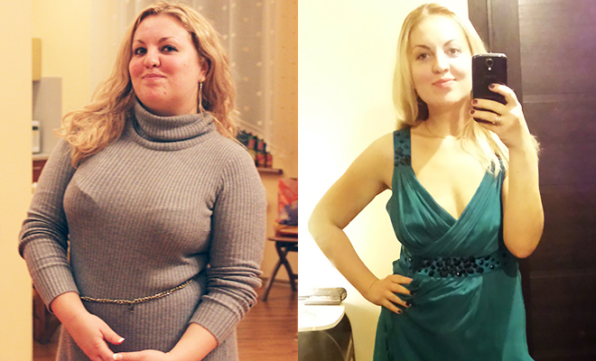
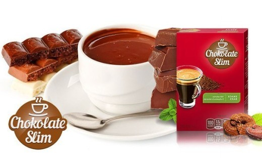

Visiems labas! Aš rašau čia retai, nes totaliai trūksta laisvo laiko. Bet mano šiandieninis laiškelis brendo ilgą laiką, nuo tų pačių laikų, kaip numečiau 27 kg.
Kai pirmą kartą pasirodžiau viešai su savo nauju įvaizdžiu, beveik kiekvieną dieną mane klausia, kaip man pavyko taip greitai ir nekenkiant sveikatai numesti svorį. Ir va, norint atsakyti visiems ir iškart – šis laiškelis.
Nesu aktorė, todėl ne labai jaudinausi dėl perteklinio svorio, kuris atsirado gimus vaiką. Iki tol, kai nutukimas (o tai buvo būtent nutukimas) pradėjo atsispindėti mano sveikatoje. Be dusulio jau negalėjau pakilti į antrą aukštą, negalėjau žaisti su vaikais, keletą kartų patekdavau į nepatogią padėtį dėl to, kad smarkiai prakaitavau, ir tai buvo pastebima kadre. Ir svarbiausia: man auga sūnus, koks jam iš manes bus pavyzdys? Juk mama turi būti pati gražiausia!
Ir aš pradėjau ieškoti veiksmingą būdą sulieknėti. Iš pradžių kreipiausi į svorio koregavimo centrą, kur man paskyrė griežčiausią dietą ir treniruočių programą salėję. Aš sąžiningai pabandžiau, bet išlaikiau tik 11 dienų. Per visą šį laiką numečiau tik 1,5 kg, ir tai greičiausia dėl nervų. Visą dieną aš dalyvauju repeticijose, filmavime, o po to dar reikėdavo eiti į sporto salę, o vėliau dar pusę nakties ruošti sau neskanius dietinius patiekalus kitai dienai. Paaiškėjo, kad toks svorio sumažinimo būdas man nedera. Vėliau pradėjau ieškoti lieknėjimo programų internete, stengiausi riboti save valgyme... Natūralu, kad rezultatas buvo nulinis! O man jau buvo bjauru žiūrėti į save ekrane...
Štai kaip aš, dar jauna moteris atrodžiau visai neseniai...
Ir galbūt, aš taip ir susitaikyčiau su savo svoriu, jeigu praeitą vasarą, poilsio su šeima Berlyne metu, nesutikčiau savo senos pažįstamos Inos Valavičienės, TV žvaigždės. Mes nesimatėme gal 10 metų, ir aš prisimenu ją kaip labai nutukusią 100 kg moterį. Bet čia jis atrodė tiesiog kaip jauna mergina: graži ir liekna! Mes pradėjom kalbėtis ir aš paklausiau, kaip jai pavyko taip pasikeisti ir sulieknėti? (Nors dabar aš pati girdžiu šį klausimą kasdien)
Gavusi Inos leidimą, skelbiu jos nuotrauką iki lieknėjimo ir po jo
Ina man papasakojo, kad anuomet perteklinis svoris jai sukėlė daugelį bėdų su sveikata: sąnariai, varikozė, širdies problemos… bet svarbiausia – ji negalėjo pastoti. O juk kiekvienai moteriai, nesvarbu ji policininkė ar aktorė, tai yra svarbiausia! Tikėdamasi išgydyti nevaisingumą, ji nuvyko į tyrimą į Izrailio kliniką. Ten paaiškėjo, kad pastoti trukdo būtent perteklinis svoris ir net jeigu ji stebuklingai pastotų, tai negalėtų išnešioti vaiką.
Ir ten pat, klinikoje, jai pasiūlė išbandyti visiškai naują anam momentui priemonę pagreitintam svorio sumažinimui. Sakant tiksliau, jai pasiūlė savanoriškai sudalyvauti klinikiniuose vaisto bandymuose jo sertifikacijai Izrailyje. Pats vaistas pagamintas JAV, ten jis sertifikuotas, todėl rizika sveikatai buvo mažiausia, bet visgi buvo... Bet Ina sutiko. Ir kaip man prisipažino, tai buvo geriausias sprendimas jos gyvenime!
- Štai šioje klinikoje Ina gydėsi
Kaip savanorę, ją įkurdino vietiniame bendrabutyje, suteikė kasdieninę specialistų apžiūrą ir tą testuojamą vaistą. Tai buvo priemonė, kurią reikėjo vartoti tris kartus per dieną. Tarptautinis pavadinimas yra DIETonus. Ir viskas. Daugiau jokių ribojimų: nei dietos, nei treniruočių, nei masažų lieknėjimui.
Per eksperimentą (o tai tik 28 dienos) Ina numetė 21 kg! Išrašant iš klinikos, jai davė Dietonuso pakuotę, skirtą atlikti dar vieną kursą (per kurį ji numetė dar 15 kg), ir rekomendacijas. Jau po 2 mėnesių Ina pastojo ir dabar turi puikų sūnų, bet dabar apie kitą dalyką...
Susitikusi su Ina, nusprendžiau taip pat pabandyti tą vaistą, net jei tektų jį užsakyti iš Izrailio!
Susisiekiau su visais man pažįstamais gydytojais Berlyne – pasirodė, kad su šiuo lieknėjimui skirtu vaistu Vokietijoje jau seniai atlikta sertifikacija, ir jis parduodamas oficialios atstovybės interneto parduotuvėje. Gyvenime pamačiau daug ko, todėl esu ne labai patiklus žmogus, ir įforminusi užsakymą nusprendžiau pati atvažiuoti į atstovybės vadovą. Tiesiog patikrinti visus dokumentus, sertifikatus, tyrimų protokoluls.
Net iš privačios medicinos laboratorijos pasiėmiau cheminei analizei skirtą pakuotę. Viskas buvo tvarkoj.
 Irina Kabasakalienė, dietologė:
Irina Kabasakalienė, dietologė:
“Mes atidžiai ištyrėme lieknėjimui skirto vaisto DIETonus sudėtį, ir galime drąsiai teigti, kad tai 100 proc. saugi ir, matyt, šiai dienai efektyviausia priemonė metant svorį. Veikiančių medžiagų proporcija pasirinkta taip, kad organizmas pats pradeda perdirbti daugiametes riebalų atsargas, jas transformuodamas į energiją. Taigi, jūs ne tik lieknėjate, bet ir jaučiate žvalumą ir jėgų antplūdį“.
Man parekomendavo atlikti du 16 dienų kursus su vienos savaitės pertrauka (dėl to, kad reikėjo numesti daugiau nei 20 kg, o kai turite 10-15 kg perteklinio svorio, užteks ir vieno kurso).
Vaistą vartodavau kasdien tris kartus, kapsules su skirtinga sudėtimi rytui, dienai ir vakarui. Tiesiog užgerdavau stikline vandens. Mano gyvenimas vyko kaip ir paprastai: vyras, sūnus, namai, pasirodymai, repeticijos. Mityboje savęs niekaip neribojau, valgiau viską, ką ruošiau šeimai.
Jau po savaitės pastebėjau, kad drabužiai ant manęs tiesiog kaba. Pasisveriau: pasirodė, kad per savaitę dingo 8 kg! Dar po savaitės pasirodymui teko skubiai užsakyti mažesnio dydžio kostiumą. Smagiausia tai, kad mėnesio pabaigai jį teko vėl persiūti. Vyras net pasiuntė mane į gydytoją, bijojo, kad esu susirgusi dėl įtampos darbe, netikėjo, jog galima taip greitai numesti svorį dėl kažkokio stebuklingo vaisto ir be dietos. Bet su mano sveikata viskas buvo visiškai tvarkoj, gydytojas patvirtino!
- Pati be galo džiaugiuosi savo nauju įvaizdžiu!
- Skirtumas tarp šių nuotraukų yra 25,5 kg ir visas gyvenimas!
Iš viso, vartojau DIETonus 30 dienų (tiksliau, iš pradžių 15 dienų, po to savaitės pertrauka, po to dar pusantro savaitės), ir per šį laiką numečiau net 25,5 kg Atlikusi pirmą kursą, numečiau 13 kg, o po antrojo - dar 12,5. Ir patikėkite, neatlikau nevieno pratimo, nei lauke, nei sporto salėje!
Mano sūnus dabar sako, kad esu dabar panaši ne į mama, o į vyresnę sesutę. Juokauja taip :)
Kai pirmą kartą po pertraukos pasirodžiau eteryje, tai negalima buvo nepastebėti, kad sulieknėjau. Žurnalistai pastebėjo, sakė komplimentus. O iš moterų nuolat gaunu aibę klausimų. Todėl dalinuosi su jumis savo paslaptimi ir DIETonus atstovybės Vokietijoje interneto svetainės adresu.
Vaistą galima drąsiai užsakyti ČIA, pati patikrinau. Ir įsiminkite, merginos, niekados nėra per vėlu susimąstyti apie save, savo išvaizdą ir sveikatą. Dievas myli tuos, kurie myli save. Laimės jums ir sėkmės!
Dėmesio
Padažnėjo atvejų, kai parduodami DIETonus vaisto padirbiniai, kurie neturi gydomųjų savybių. Todėl specialiai savo skaitytojams čia patalpinau mygtuką, leidžiantį užsakyti vaistą DIETonus tiesiai iš vienintelio oficialaus tiekėjo. Užsakydami čia, garantuotai gausite kokybišką produktą geriausia kaina – tik už 1 eurą. Tiesiog spustelėkite žemiau esantį mygtuką ir pateksite į oficialią interneto svetainę, kur galėsite užsisakyti.

Nieko sau rezultatas! Du skirting žmonės nuotraukose! pavydu!
bet aš vartoju šitą kompleksą tik pirmą dieną. Kol kas nelabai patogu ant ausies laikosi, bet galima priprasti. Tikiuosi kad rezultatai bus greitai
Dovanokit, atsitiktinai suradau jūsų dienoraštį, negalėjau praeiti pro šalį. Marija, esate gražuolė! Bet noriu paklausti, ar nežalingas toks poveikis į hormonus?
Gėle, man taip pat buvo aktualus šis klausimas, kažkur tinkle buvau suradusi atsakymą, kad kompleksas aktyvina kažkokių „liesų“ hormonų veikimą, kurie atsako už medžiagų apykaitos.
Nevisi turi galimybę apsilankyti sportinėse salėse, kodėl taip iškart sakyti griežtai.
Efektas yra didžiulis! Minusas 10к kgг per 2 savaites! Pati abejojau, bet priemonė realiai veikia!